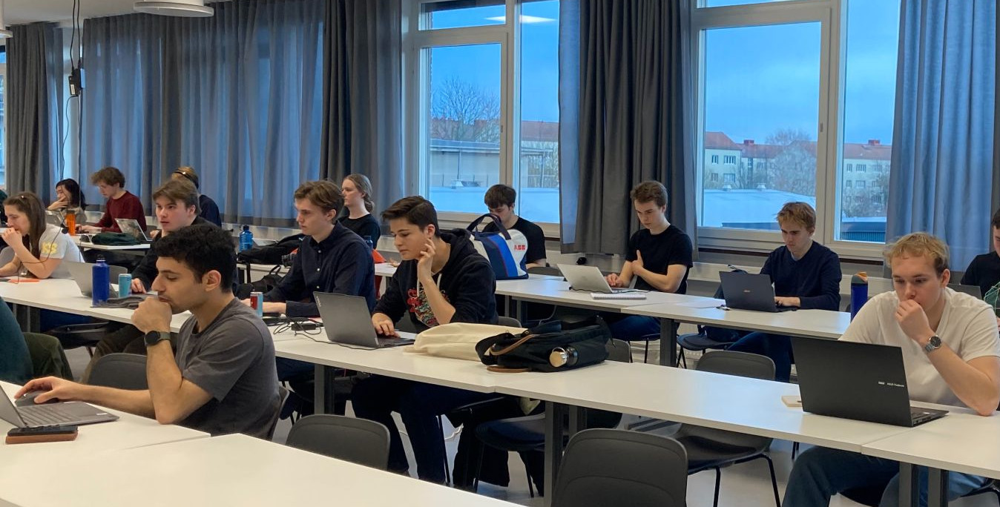
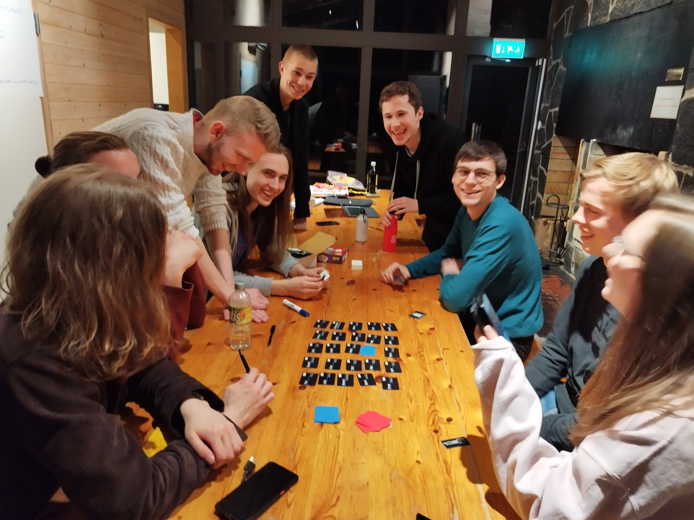
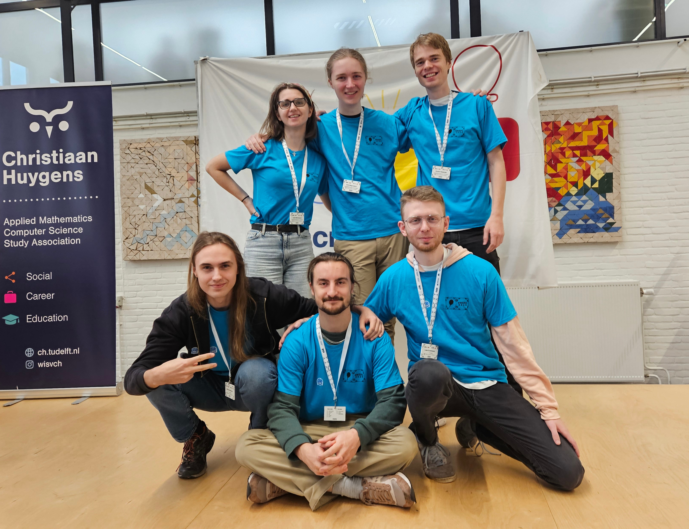
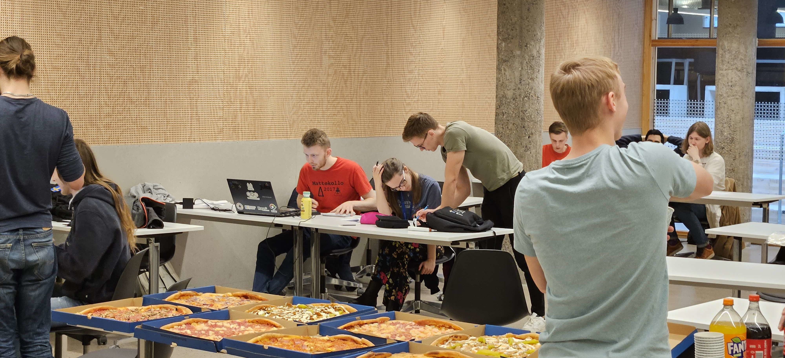
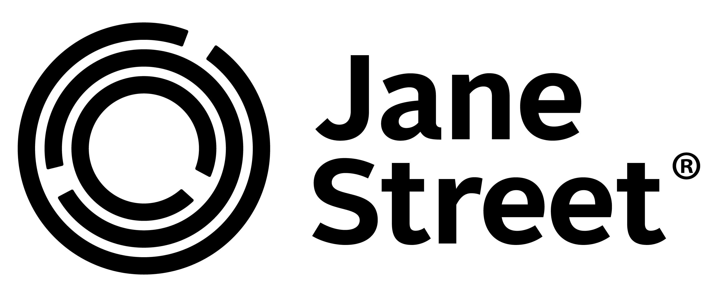

CHALMERS CODING CLUB
TISDAGSTRÄFFAR
Varje tisdag ses vi för att lära oss nya algoritmer och gött häng :)
Alla är välkomna och vi brukar bjuda på baguetter 😋
Mer info på Discord!
CHALMERS CHALLENGE 2025
I år fick vi totalt in 960 inlämningar under tävlingen, rekord för Chalmers Challenge 😲 David Wärn, som har en andraplacering och en tredjeplacering i Chalmers Challenge sedan tidigare, knep i år förstaplatsen 🥇🥇
Resultat
CHALMERS CHALLENGE 2024
Simon Lindholm vinner Chalmers Challenge för andra gången, starkt jobbat!Resultat
CHALMERS CHALLENGE 2023
Sex personer löste allt, wow! Mårten vann på tiebreak och var dessutom först med att lösa tre av problemen 😮Resultat
Tack till TogetherTech och Omegapoint som sponsrade tävlingen!
CHALMERS CHALLENGE 2021
Chalmers Challenge 2021 var en två timmar lång programmeringstävling som anordnades av Chalmers Coding Club den 23 januari. Grattis till Simon Lindholm som vann! Resultaten finns här.Ses nästa år ;)
Boot Camp 2025

Vår största boot camp hittills med både sportstugan och CS-bastun! Vi hade föreläsningar om bland annat binärsökning, dynamisk programmering, flow och talteori, varvat med roliga aktiviteter som estimathon, Go-morgon och bastubad. Tack till våra sponsorer Huawei och Jane Street som möjliggjorde lägret!
Boot Camp 2023
Boot Camp 2023 var 10-12 april i studentkårens Recreation Härryda. Tack till TogetherTech som sponsrade och bidrog med några roliga uppgifter!

NWERC 2024
I år var Northwestern Europe Regional Contest (NWERC) återigen i Delft, Nederländerna. Läs reseberättelsen här!
EUC 2024

ICPC stiftelsen introducerade, i samband med en minskning i antalet kvalifikationer för världsfinalerna, en ny tävling i år. Allt roligt som hände på resan kan du läsa i bloggen!
NCPC 2023
237 lag från hela norden deltog, bland dem 7 lag från Chalmers. Mycket bra resultat för Chalmers, bland annat både bästa och näst bästa studentlag i Sverige. Fullständiga resultat här.
NWERC 2022
Sju medlemmar åkte till Northwestern Europe Regional Contest (NWERC) 2022 i Delft i Nederländerna. Läs vår reseblogg här.CHALMERS GOLFMÄSTERSKAP 2025
Anton Älgmyr försvarade sin titel med mycket imponerande spel i årets golfmästerskap! ⛳ Han hittade kortaste vägen genom en labyrint med bara 160 slag 🤯CHALMERS GOLFMÄSTERSKAP 2024
Grattis till Chalmers nya golfmästare Anton Älgmyr!Den här gången var uppgiften att beräkna A^k för matris A och litet heltal k. Anton och övriga deltagare spelade detta hål med imponerande kreativitet och träffsäkerhet!
CHALMERS GOLFMÄSTERSKAP 2023
Carl Sundvall vann 🎉 Årets uppgift var ungefär Math Homework. För andra året i rad räknade domaren bytes lite knasigt :)CHALMERS GOLFMÄSTERSKAP 2022
Årets uppgift var att multiplicera två polynom. Q blev ny golfmästare genom att tänka utanför boxen och skriva en lösning som slog alla andra med råge!CHALMERS GOLFMÄSTERSKAP 2021
Aprilskämtstävling, tävling i att code golfa kattis-problemet Tri. Jonathan Lööv blev Chalmers Golfmästare med 113SPONSORER

KONTAKT
Enklast är att kontakta oss på vår
Discord-server.
Mail: styrelsen@chalmerscoding.club
Ordförande:
Mail: styrelsen@chalmerscoding.club
Ordförande:
- Rasmus Hulthe (zazmuz)
- Joel Andersson (erwinia)
- Joshua Andersson (matistjati)
- Sebastian Danckwardt (swesebbe3336)
- Gustav Kalander (gustav0500)
- Jens Kollberg (kaskelott)
- Erik Magnusson (erikbot)
- Hugo Söderbergh (square_cylinder)
- Julia Mårtensson (_naphthalene)
- Rebecka Mårtensson (rebecka5090)
- Harry Zhang (hairez)